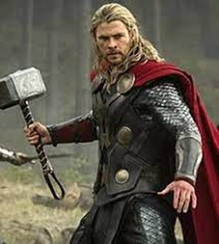

About Chris Hemsworth
Chris Hemsworth is a 40-year-old Australian actor well known for his role as Thor in Marvel movies/series. He was born in Melbourne on the 11th of August 1983. His parents are Craig and Leonie Hemsworth. Craig is a social service counsellor (social worker) and Leonie is an English teacher. Out of Craig and Leonie’s 3 children, Chris is the middle child. However, this does not stop him from being the most popular of the 3 brothers. He has an estimated net worth of $130 million, the highest value out of the Hemsworth siblings. Chris Hemsworth is happily married to Elsa Pataky, who starred as the main character in Interceptor. She also has a role in the series Fast & Furious. Together they have 3 kids: their daughter Indie (11) and twin sons Tristan and Sasha (9).

Chris Hemsworth has been given many awards in his acting career, some of those awards being:
- MTV Movie Movie & TV Award for Best Fight
- People's Choice Award for Favourite Movie & Action Movie Star
- Logie Award for Most Popular New Male Talent
- AACTA Trailblazer Award
- Kids Choice Award for Favourite Movie Actor
- Teen Choice Award for Choice Summer Movie star: Male & Actor: Sci-Fi
- G’Day USA Excellence in Film award
Although Chris is famous for the role of Thor, he nearly wasn’t. Thor was going to be his younger brother Liam but that was the problem, he was too young, although Liam didn’t get the position, they realized he had an older brother who was also an actor and they asked him about the role, and he agreed to it. Chris’s acting career started as King Arthur in a fantasy television series called Guinevere Jones.